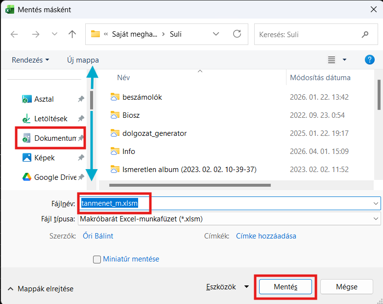
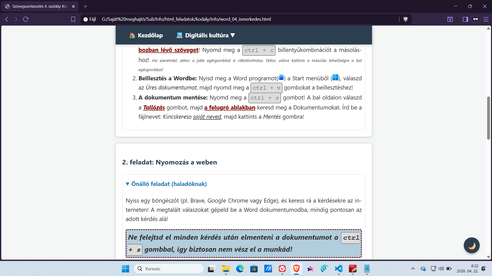
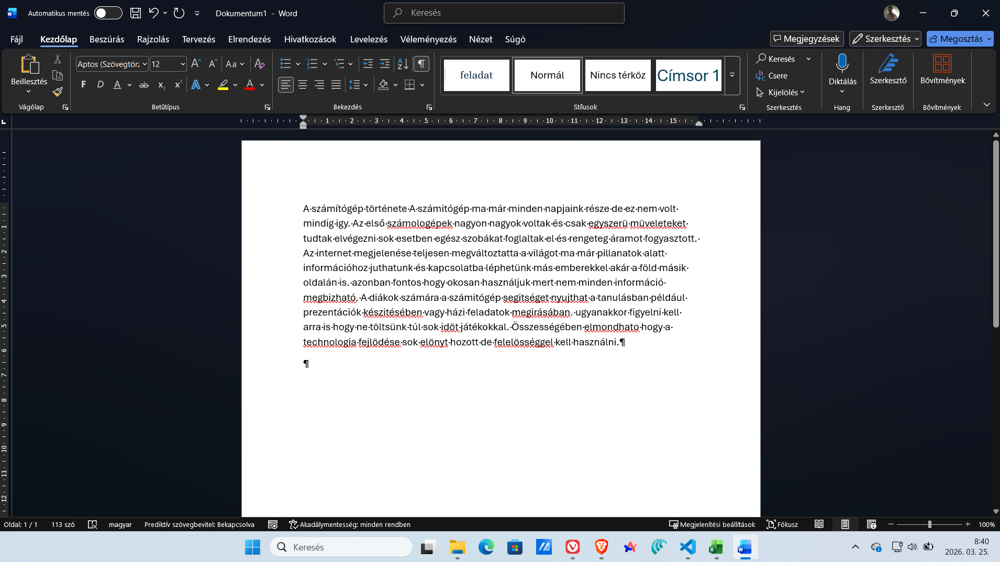
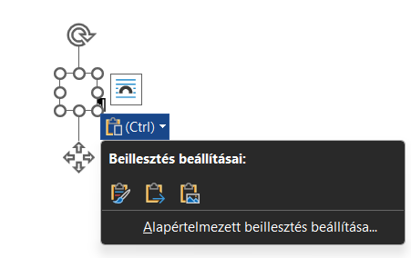

Például ilyen részeken magyarázom el, hogy mit hogyan kell csinálni. Ha most ismét a piros szövegre kattintasz, akkor ez a rész bezáródik.
Üdvözöllek a digitális kincskeresők között! Mai küldetésünk során az interneten fogunk nyomozni érdekességek után, majd a zsákmányt (a szövegeket és képeket) egy saját Word dokumentumban fogjuk szépen elrendezni és kiszínezni. Készen állsz?
Ezekben a leírásokban lépésenként vezetlek végig a feladatokon. Minden le van írva. A lépéseket leírom röviden összefoglalva, majd részletesen, magyarázattal. Ha így formázott részt látsz, arra kattints rá! Itt valamilyen képes vagy szöveges segítséget találsz.
Másold ki a lenti nyers szöveget (a kérdéseket)! Nyisd meg a Wordöt, és illeszd be egy új, üres dokumentumba! Mentsd el a fájlt a Dokumentumokba Kincskereso saját neved.docx néven! Ugye tudod, hogy a saját neved részre a saját teljes nevedet kell beírni? 😊

Nyiss egy böngészőt (pl. Brave, Google Chrome vagy Edge), és keress rá a kérdésekre az interneten! A megtalált válaszokat gépeld be a Word dokumentumodba, mindig pontosan az adott kérdés alá!
Ne felejtsd el minden kérdés után elmenteni a dokumentumot a ctrl + s gombokkal, így biztosan nem vész el a munkád!

Ne felejtsd el minden kérdés után elmenteni a dokumentumot a ctrl + s gombokkal, így biztosan nem vész el a munkád!
A fekete-fehér szöveg unalmas. Formázd meg a dokumentumot! A legfelső címet ("Internetes kincskeresés") igazítsd középre, és tedd félkövérré! Az általad begépelt válaszok mindegyike pedig legyen más-más színű!
 )!
)! ) gombot! Kattints a mellette lévő kis nyílra, és válassz egy színt! Ismételd meg ezt a többi válasszal úgy, hogy mindegyik más színű legyen!
) gombot! Kattints a mellette lévő kis nyílra, és válassz egy színt! Ismételd meg ezt a többi válasszal úgy, hogy mindegyik más színű legyen!
Keress a Google Képkeresőben egy képet a Minecraftból ismert Axolotlról! Másold le a képet az internetről, és illeszd be a Word dokumentumod legaljára! A sarkánál fogva kicsinyítsd le egy kicsit, ha túl nagy lenne!
Ha ezzel is megvagy, mentsd el a munkádat a ctrl + s billentyűkombinációval!

Ha mindennel megvagy, mentsd el a munkádat a ctrl + s billentyűkombinációval!
Ha végeztél vagy vége az órának, az alábbiak szerint adhatod be a munkádat.
Görgess le a részletekhez, ha valami nem tiszta!


 )! Itt a Kezdőképernyő alatt (ez jelenik meg automatikusan) látnod kell az éppen most elmentett fájlodat. Kattints erre egyszer, hogy kijelöld (nem akarjuk megnyitni, ezért ne duplán; ha mégis duplán kattintottál, akkor térj vissza a pont elejére!), majd nyomd meg a ctrl + c billentyűkombinációt!
)! Itt a Kezdőképernyő alatt (ez jelenik meg automatikusan) látnod kell az éppen most elmentett fájlodat. Kattints erre egyszer, hogy kijelöld (nem akarjuk megnyitni, ezért ne duplán; ha mégis duplán kattintottál, akkor térj vissza a pont elejére!), majd nyomd meg a ctrl + c billentyűkombinációt!